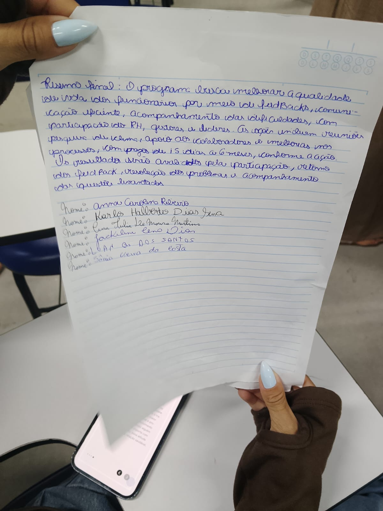

| Tipo / Elemento Analisado | Traços Comportamentais Mapeados | Códigos de Validação | Interpretação do Bloco |
|---|---|---|---|
| MS incalculavel | - | - | Margem superior sem referências ou recuos padronizados suficientes para cálculo analítico. |
| ME incalculavel | - | - | Margem esquerda desalinhada ou ausente de métricas estáveis para avaliação. |
| MD incalculavel | - | - | Margem direita com comportamento atípico, impedindo a verificação exata de limites espaciais. |
| Ordem distribuição incalculavel | - | - | A distribuição espacial dos blocos de texto não segue métricas analisáveis clássicas. |
| Ordem execução incalculavel | - | - | O encadeamento dinâmico ou a ordem de execução gráfica não puderam ser aferidos com precisão. |
| 7.3.1. Agrupada Evoluída | Reflexão (0), Moderação (0), Compreensão (1), Intuição (12) | P8 P26 | Equilíbrio nas associações mentais, combinando um raciocínio lógico ponderado com boa sensibilidade intuitiva. |
| 8.1.2. Média | Autocontrole (0), Equilíbrio (0), Moderação (0), Estabilidade (0), Coerência (1), Adaptação (3) | P20 P21 P24 P26 | Forte senso de realidade prática, estabilidade de humor e maturidade adaptativa em contextos sociais cotidianos. |
| 8.2.1. Alta | Autoconfiança (2), Independência (5), Persuasão (12), Altivez (12) | P4 P16 N20 | Expressiva autonomia pessoal e facilidade para convencer e liderar, demandando vigilância contra a soberba profissional. |
| 9.1.3. Sinuosa Moderada | Imaturidade (7), Inadaptação (7), Indecisão (8), Insegurança (9), Desatenção (10), Dispersão (10) | N7 N8 N18 N29 | Pontua ligeiras flutuações de concentração sob estresse, hesitações estratégicas ou pequenas quebras no foco operacional. |
| 9.2.6. Alternada | Indecisão (8), Incerteza (9), Desatenção (10), Inconstância (10) | N7 N8 | Indica oscilações momentâneas de energia ou foco, impactando temporariamente a constância do ritmo de trabalho. |
| 10.5.1. Alternada Indecisa | Indecisão (8), Incerteza (9), Insegurança (9), Inconstância (10) | N7 N28 | Aponta para episódios de hesitação em decisões complexas e variações na autoconfiança operacional. |
| 11.1.2. Tipografada | Síntese (2), Priorização (2), Polivalência (4), Aperfeiçoamento (12), Criatividade (12), Imaginação (12) | P3 P7 P13 P17 | Busca ativa por excelência funcional e estética, versatilidade intelectual e facilidade para propor soluções inovadoras. |
| 11.2.2. Arredondada | Maturidade (1), Síntese (2), Iniciativa (2), Adaptação (3), Objetividade (4), Atividade (4) | P14 P17 P20 P26 | Diplomacia e jogo de cintura nas relações humanas, combinados com um foco prático para desatar nós operacionais. |
| 11.2.4. Proporcionada | Ética (0), Autodomínio (0), Estética (12), Análise (1), Síntese (2), Precisão (4) | P2 P6 P15 P20 P21 | Excelente equilíbrio psicológico, mente minuciosa para análise detalhada e forte controle de impulsos. |
| 11.2.5. Simplificada | Síntese (2), Autoconfiança (2), Objetividade (4), Economia (4), Precisão (4), Criatividade (12) | P2 P3 P7 P13 P15 | Habilidade para otimizar fluxos práticos, eliminando excessos burocráticos com alto nível de precisão técnica. |
| 12.9. Normal | Moderação (0), Equilíbrio (0), Lucidez (1), Coerência (1), Sinceridade (1), Tolerância (11) | P20 P21 P26 P27 N22 | Discernimento equilibrado na avaliação de cenários cotidianos, clareza de propósitos e maturidade social. |
| 13.5. Pausada | Autocontrole (0), Responsabilidade (0), Adaptação (3), Espontaneidade (3), Improvisação (4), Polivalência (4), Desenvoltura (4), Tolerância (11) | P14 P20 P21 P25 P26 | Postura ponderada, excelente autocontrole emocional e versatilidade prática para gerenciar múltiplas demandas. |
| 15.4. Monótono | Estabilidade (0), Limitação (7), Desânimo (7), Passividade (8), Acomodação (8), Desmotivação (8), Indecisão (8), Descompromisso (9) | P9 P20 P26 N10 N18 N22 N23 N27 | Reflete um comportamento altamente rotineiro que garante constância, mas aponta para riscos latentes de desmotivação ou passividade operacional. |